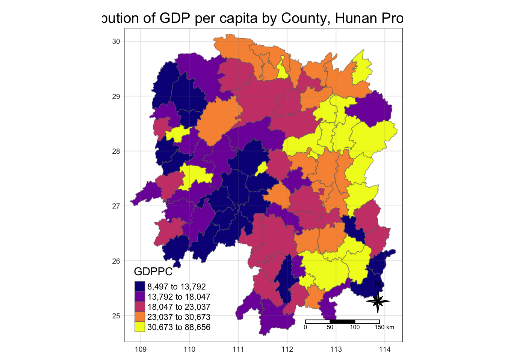

pacman::p_load(sf, tmap, sfdep, tmap, tidyverse)In-Class Exercise 05
In-Class Exercise
R
sf
Local Spatial Autocorrelation Statistics using sfdep
In-Class Exercise 05
Local Spatial Autocorrelation Statistics Using sfdep Package
1.0 Overview
A collection of geospatial statistical analysis methods for analysing the location related tendency (clusters or outliers) in the attributes of geographically referenced data (points or areas). Local spatial autocorrelation statics can be decomposed from their global measures such as local Moran’s I, local Geary’s c, and Getis-Ord Gi*. In this exercise, we will explore sfdep package in R-environment, with a case study on gross domestic product per captial (GDPPC) of Hunan.
2.0 Overview
In this hands-on exercise, we will use the following R package:
3.0 Importing Datasets to R Environment
In this exercise, we will use the following datasets:
Hunancounty boundary layer. This is a geospatial data set in ESRI shapefile format.Hunan_2012.csvThis csv file contains selected Hunan’s local development indicators in 2012.
3.1 Importing Geospatial Data
In this section, st_read() of sf package will be used to import the three geospatial data sets mentioned in previous section into R environment.
hunan_GDPPC <- st_read(dsn = "../data/geospatial",
layer = "Hunan") Reading layer `Hunan' from data source
`/Users/khantminnaing/IS415-GAA/data/geospatial' using driver `ESRI Shapefile'
Simple feature collection with 88 features and 7 fields
Geometry type: POLYGON
Dimension: XY
Bounding box: xmin: 108.7831 ymin: 24.6342 xmax: 114.2544 ymax: 30.12812
Geodetic CRS: WGS 843.1 Importing Aspatial Data
In this section, read_csv() of sf package will be used to import the csv file into R environment. The output is R dataframe class.
hunan2012 <- read_csv("../data/aspatial/Hunan_2012.csv")
hunan2012# A tibble: 88 × 29
County City avg_wage deposite FAI Gov_Rev Gov_Exp GDP GDPPC GIO
<chr> <chr> <dbl> <dbl> <dbl> <dbl> <dbl> <dbl> <dbl> <dbl>
1 Anhua Yiyang 30544 10967 6832. 457. 2703 13225 14567 9277.
2 Anren Chenz… 28058 4599. 6386. 221. 1455. 4941. 12761 4189.
3 Anxiang Chang… 31935 5517. 3541 244. 1780. 12482 23667 5109.
4 Baojing Hunan… 30843 2250 1005. 193. 1379. 4088. 14563 3624.
5 Chaling Zhuzh… 31251 8241. 6508. 620. 1947 11585 20078 9158.
6 Changning Hengy… 28518 10860 7920 770. 2632. 19886 24418 37392
7 Changsha Chang… 54540 24332 33624 5350 7886. 88009 88656 51361
8 Chengbu Shaoy… 28597 2581. 1922. 161. 1192. 2570. 10132 1681.
9 Chenxi Huaih… 33580 4990 5818. 460. 1724. 7755. 17026 6644.
10 Cili Zhang… 33099 8117. 4498. 500. 2306. 11378 18714 5843.
# ℹ 78 more rows
# ℹ 19 more variables: Loan <dbl>, NIPCR <dbl>, Bed <dbl>, Emp <dbl>,
# EmpR <dbl>, EmpRT <dbl>, Pri_Stu <dbl>, Sec_Stu <dbl>, Household <dbl>,
# Household_R <dbl>, NOIP <dbl>, Pop_R <dbl>, RSCG <dbl>, Pop_T <dbl>,
# Agri <dbl>, Service <dbl>, Disp_Inc <dbl>, RORP <dbl>, ROREmp <dbl>4.0 Geospatial Data Wrangling
4.1. Performing Relational Joint
In previous section, we have imported a shapefile hunan representing the geographical boundaries of Hunan and a dataframe hunan2012 which contains the attribute fields corresponding to counties in Hunan.
The next step in our analysis involves updating the attribute table of the hunan shapefile with the values from hunan2012.
Hence, we will need to update the attribute table of Hunan by using left_join() of dplyr package. This function effectively merges the two datasets, ensuring that each county’s geographical data is accurately linked with its corresponding attribute data from the hunan2012 dataframe.
hunan_GDPPC <- left_join(hunan_GDPPC,hunan2012, join_by(County))%>%
select(1:4, 7, 15)4.2 Plotting Choropleth Map
tmap_mode('plot')
tm_shape(hunan_GDPPC) +
tm_fill(col = "GDPPC",
style ="quantile",
palette = "plasma",
title= "GDPPC") +
tm_layout(main.title = "Distribution of GDP per capita by County, Hunan Province",
main.title.position = "center",
main.title.size = 1.2,
legend.height = 0.45,
legend.width = 0.35,
frame = TRUE) +
tm_borders(alpha = 0.5) +
tm_compass(type="8star", size=2)+
tm_scale_bar()+
tm_grid(alpha = 0.2)
5.1 Deriving Contiguity Weights: Queen’s Method
Now, we will derive contiguity weight matrix using Queen’s method. To achieve this, we will use st_contiguity and st_weights functions, respectively
wm_q <- hunan_GDPPC %>%
mutate(nb = st_contiguity(geometry),
wt = st_weights(nb,
style = "W"),
.before = 1)
wm_qSimple feature collection with 88 features and 8 fields
Geometry type: POLYGON
Dimension: XY
Bounding box: xmin: 108.7831 ymin: 24.6342 xmax: 114.2544 ymax: 30.12812
Geodetic CRS: WGS 84
First 10 features:
nb
1 2, 3, 4, 57, 85
2 1, 57, 58, 78, 85
3 1, 4, 5, 85
4 1, 3, 5, 6
5 3, 4, 6, 85
6 4, 5, 69, 75, 85
7 67, 71, 74, 84
8 9, 46, 47, 56, 78, 80, 86
9 8, 66, 68, 78, 84, 86
10 16, 17, 19, 20, 22, 70, 72, 73
wt
1 0.2, 0.2, 0.2, 0.2, 0.2
2 0.2, 0.2, 0.2, 0.2, 0.2
3 0.25, 0.25, 0.25, 0.25
4 0.25, 0.25, 0.25, 0.25
5 0.25, 0.25, 0.25, 0.25
6 0.2, 0.2, 0.2, 0.2, 0.2
7 0.25, 0.25, 0.25, 0.25
8 0.1428571, 0.1428571, 0.1428571, 0.1428571, 0.1428571, 0.1428571, 0.1428571
9 0.1666667, 0.1666667, 0.1666667, 0.1666667, 0.1666667, 0.1666667
10 0.125, 0.125, 0.125, 0.125, 0.125, 0.125, 0.125, 0.125
NAME_2 ID_3 NAME_3 ENGTYPE_3 County GDPPC
1 Changde 21098 Anxiang County Anxiang 23667
2 Changde 21100 Hanshou County Hanshou 20981
3 Changde 21101 Jinshi County City Jinshi 34592
4 Changde 21102 Li County Li 24473
5 Changde 21103 Linli County Linli 25554
6 Changde 21104 Shimen County Shimen 27137
7 Changsha 21109 Liuyang County City Liuyang 63118
8 Changsha 21110 Ningxiang County Ningxiang 62202
9 Changsha 21111 Wangcheng County Wangcheng 70666
10 Chenzhou 21112 Anren County Anren 12761
geometry
1 POLYGON ((112.0625 29.75523...
2 POLYGON ((112.2288 29.11684...
3 POLYGON ((111.8927 29.6013,...
4 POLYGON ((111.3731 29.94649...
5 POLYGON ((111.6324 29.76288...
6 POLYGON ((110.8825 30.11675...
7 POLYGON ((113.9905 28.5682,...
8 POLYGON ((112.7181 28.38299...
9 POLYGON ((112.7914 28.52688...
10 POLYGON ((113.1757 26.82734...
Reflection
The neighbor list is created by
st_contiguity()The weight list is created by
st_weights()The
style = "W"argument indicates that the weights should be row-standardized, which is a common choice in spatial analysisThe argument
.before = 1indicates that the new variables should be added as the first columns of the data frame.
5.2 Computing Global Moran’s I
We will now compute global moran’s I values using global_moran_test() function.
global_moran_test(wm_q$GDPPC,
wm_q$nb,
wm_q$wt)
Moran I test under randomisation
data: x
weights: listw
Moran I statistic standard deviate = 4.7351, p-value = 1.095e-06
alternative hypothesis: greater
sample estimates:
Moran I statistic Expectation Variance
0.300749970 -0.011494253 0.004348351 5.3 Performing Global Moran’s I Permutation Test
We will test the Moran’s I values using Monte Carlo simulations with nsim=99. In sfdep, we can do it by using global_moran_perm() function.
set.seed(1234)
global_moran_perm(wm_q$GDPPC,
wm_q$nb,
wm_q$wt,
nsim=99)
Monte-Carlo simulation of Moran I
data: x
weights: listw
number of simulations + 1: 100
statistic = 0.30075, observed rank = 100, p-value < 2.2e-16
alternative hypothesis: two.sided
Reflection
The p-value is < 2.2e-16, which is less than 0.05, indicating that the spatial pattern observed is very unlikely to be the result of random chance. Therefore, we reject the null hypothesis of no spatial autocorrelation.In conclusion, the test suggests that there is significant positive spatial autocorrelation in the hunan$GDPPC data. This means that areas with similar values of GDPPC are more likely to be located near each other than would be expected if the data were randomly distributed.